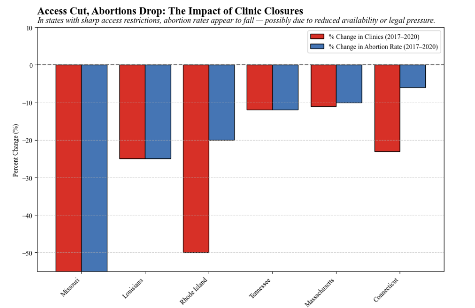
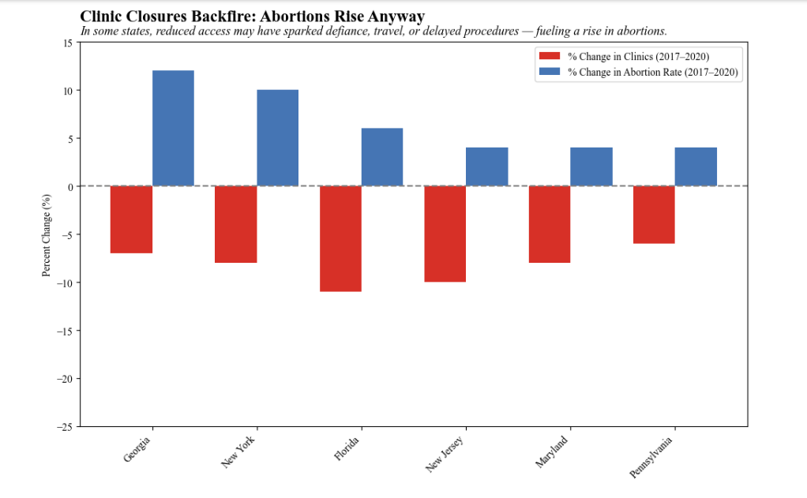

Proposition: As the number of abortion clinics decline in a given state, the number of abortions in that state also declines.
FOR the Proposition

Design Decisions and Rationale:
- Score: -2.0 — I chose to only include states where both clinic numbers and abortion rates declined. This created a strong visual argument for the proposition, but it also meant I was intentionally hiding states that contradicted the pattern. I made this choice because showing the full dataset made the narrative much less clear and persuasive.
- Score: -1.5 — The y-axis starts at around -60% rather than zero, which exaggerates how steep the declines are. While the values are accurate, the scale gives a much more dramatic impression. I knew this would grab attention and reinforce the visual drop-off between clinic and abortion rates.
- Score: -0.5 — The title “Access Cut, Abortions Drop” implies a cause-and-effect relationship that the data doesn’t directly prove. It was chosen to emotionally prime the viewer to read the chart as evidence of effectiveness, even if the reality is more complex.
- Score: 1.0 — I used grouped bars for clinic change and abortion rate change. This was a clean, readable design that helps viewers instantly compare both metrics side by side, and it didn’t rely on misleading encodings.
AGAINST the Proposition

Design Decisions and Rationale:
- Score: -2.0 — For this visualization, I filtered for the opposite trend: states where abortions went up even as clinics closed. I excluded states that didn’t support this narrative. While this technique helps make a strong counterpoint, it hides the broader truth of mixed results.
- Score: -1.5 — The y-axis tops out around +15%, which is quite close to the actual data range, but still makes the increases look visually bigger than they really are. I did this to amplify the apparent growth and create a sense of backlash or unintended consequence.
- Score: -0.5 — I titled it “Clinic Closures Backfire” to imply failure. This isn’t a neutral description, but it frames the increases in a way that’s provocative and easier to remember.
- Score: 1.0 — The visualization uses clean grouped bars again, which allows readers to compare the metrics without any distortion in the bar sizes themselves. Even though the context is filtered, the chart itself is honest.
Final Reflection
These two visualizations were designed to make opposite arguments about the same phenomenon: whether a decline in abortion clinics leads to a decline in abortions. For the “FOR” perspective, I selectively included states like Missouri and Rhode Island, where both clinic numbers and abortion rates dropped significantly. This was intended to imply a direct correlation. The truncated y-axis exaggerated the scale of the drops, making them appear more dramatic. I chose an emotionally charged title to further reinforce this association. The color scheme and alignment were chosen to make the data visually persuasive and emphasize the stark similarities between abortion rate and clinic closure rate.
The “AGAINST” visualization followed a similar design strategy but flipped the implication. I hand-picked states that contradicted the proposition — places where abortions rose despite fewer clinics. Again, the y-axis was truncated to dramatize small increases, and the title was chosen to suggest a counterintuitive backlash. While both charts technically use real data, they each manipulate framing and context to persuade the viewer toward opposing conclusions.
Through this project, I realized how easy it is to manipulate data in order to persuade an audience of anything! The fact that the same data can be used in order to create two graphs that argue completely different points is evidence that deception without technical data fabrication is easy, and likely very prevalent in the media!
What really stood out to me is how deception can happen without lying — just through framing, omission, and emphasis. I now define ethical visualization as not just using honest numbers, but also being honest about what’s left out and why. This project made me realize how persuasive charts can be, and how important it is to approach all visual data with a critical eye, because "not lying" does not mean that the visualization was dont earnestly.